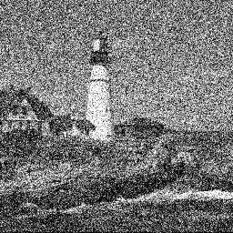

ImagePhaseCongruency
This package provides a collection of image processing functions that exploit the importance of phase information in our perception of images. The functions form two main groups:
Functions that detect specific patterns of local phase for the purpose of feature detection.
Functions that enhance an image in a way that does not corrupt the local phase so that our perception of important features are not disrupted.
Installation
pkg> add ImagePhaseCongruency
Feature detection via phase congruency
| . | |
|---|---|
 |
Rather than assume a feature is a point of maximal intensity gradient, the Local Energy Model postulates that features are perceived at points in an image where the Fourier components are maximally in phase. (See the Fourier Series logo of this page). This model was developed by Morrone et al. [1986] and Morrone and Owens [1987]. Kovesi [1997, 1999, 2002] subsequently developed methods of computing phase congruency from quadrature pairs of log-Gabor wavelets.
Phase congruency is an illumination and contrast invariant measure of feature significance. Unlike gradient based feature detectors, which can only detect step features, phase congruency correctly detects features at all kind of phase angle, and not just step features having a phase angle of 0 or 180 degrees. Another key attribute is that phase congruency is a dimensionless quantity ranging from 0 to 1, making it contrast invariant. This allows fixed threshold values to be used over large classes of images.
phasecongmono()Phase congruency of an image using monogenic filters.phasecong3()Computes edge and corner phase congruency in an image via log-Gabor filters.- Example of using
phasecongmono()andphasecong3().
Phase symmetry
| . | |
|---|---|
 |
A point of local symmetry in an image corresponds to a point where the local frequency components are at either the minimum or maximum points in their cycles, that is, where all the frequency components are at the most symmetric points in their cycles. Like phase congruency, phase symmetry is a dimensionless quantity.
phasesym()Compute phase symmetry on an image via log-Gabor filters.phasesymmono()Phase symmetry of an image using monogenic filters.- Example of using
phasesymmono().
Phase preserving denoising
| . | |
|---|---|
|  |  |
This is a wavelet denoising scheme that uses non-orthogonal, complex valued, log-Gabor wavelets, rather than the more usual orthogonal or bi-orthogonal wavelets. Thresholding of wavelet responses in the complex domain allows one to ensure that perceptually important phase information in the image is not corrupted. It is also allows threshold values can be determined automatically from the statistics of the wavelet responses to the image.
ppdenoise()Phase preserving wavelet image denoising.- Example of using
ppdenoise().
Phase preserving dynamic range compression
| . | |
|---|---|
 |
A common method for displaying images with a high dynamic range is to use some variant of histogram equalization. The problem with histogram equalization is that the contrast amplification of a feature depends on how commonly its data value occurs and this can lead to some undesirable distortions in the relative amplitudes of features. Phase Preserving Dynamic Range Compression allows subtle features in images to be revealed without these distortions. It also allows the scale of analysis to be controlled. Perceptually important phase information is preserved and the contrast amplification of structures in the signal is purely a function of their amplitude.
Supporting filtering functions
gaborconvolve()Convolve an image with a bank of log-Gabor filters.monofilt()Apply monogenic filters to an image to obtain 2D analytic signal.highpassmonogenic()Compute phase and amplitude in highpass images via monogenic filters.
Test images and functions for manipulating image phase
step2line()A phase congruent test image that interpolates from a step to a line.circsine()Generate a phase congruent circular sine wave grating.starsine()Generate a phase congruent star shaped sine wave grating.noiseonf()Create $ 1/f^p $ spectrum noise images.nophase()Randomize image phase leaving amplitude spectrum unchanged.quantizephase()Quantize phase values in an image.swapphase()Demonstrates phase - amplitude swapping between images.
Utility functions for construction of filters in the frequency domain
filtergrids()Generate grids for constructing frequency domain filters.filtergrid()Generate grid for constructing frequency domain filters.gridangles()Generate arrays of filter grid angles.monogenicfilters()Generate monogenic filter grids.packedmonogenicfilters()Monogenic filter where both filters are packed in the one Complex grid.lowpassfilter()Construct a low-pass Butterworth filter.highpassfilter()Construct a high-pass Butterworth filter.bandpassfilter()Construct a band-pass Butterworth filter.highboostfilter()Construct a high-boost Butterworth filter.loggabor()The logarithmic Gabor function in the frequency domain.cosineangularfilter()Orientation selective filter with cosine windowing function.gaussianangularfilter()Orientation selective filter with Gaussian windowing function.perfft2()2D Fourier transform of Moisan's periodic image component.geoseries()Generate geometric series.
Misc functions
fillnanFill NaN values in an image with closest non NaN value.replacenanReplace NaNs in an array with a specified value.hysthreshHysteresis thresholding of an image.
References
M. C. Morrone and R. A. Owens. "Feature detection from local energy". Pattern Recognition Letters, 6:303-313, 1987.
M. C. Morrone, J. R. Ross, D. C. Burr, and R. A. Owens. " Mach bands are phase dependent". Nature, 324(6094):250-253, November 1986.
Peter Kovesi, "Symmetry and Asymmetry From Local Phase". AI'97, Tenth Australian Joint Conference on Artificial Intelligence. 2 - 4 December 1997. Proceedings - Poster Papers. pp 185-190. preprint
Peter Kovesi, "Image Features From Phase Congruency". Videre: A Journal of Computer Vision Research. MIT Press. Volume 1, Number 3, Summer 1999. paper
Peter Kovesi, "Edges Are Not Just Steps". Proceedings of ACCV2002 The Fifth Asian Conference on Computer Vision, Melbourne Jan 22-25, 2002. pp 822-827. preprint
Peter Kovesi, "Phase Preserving Denoising of Images". The Australian Pattern Recognition Society Conference: DICTA'99. December 1999. Perth WA. pp 212-217. preprint
Peter Kovesi, "Phase Preserving Tone Mapping of Non-Photographic High Dynamic Range Images". Proceedings: The Australian Pattern Recognition Society Conference: Digital Image Computing: Techniques and Applications DICTA 2012. preprint